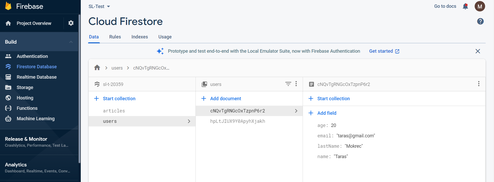
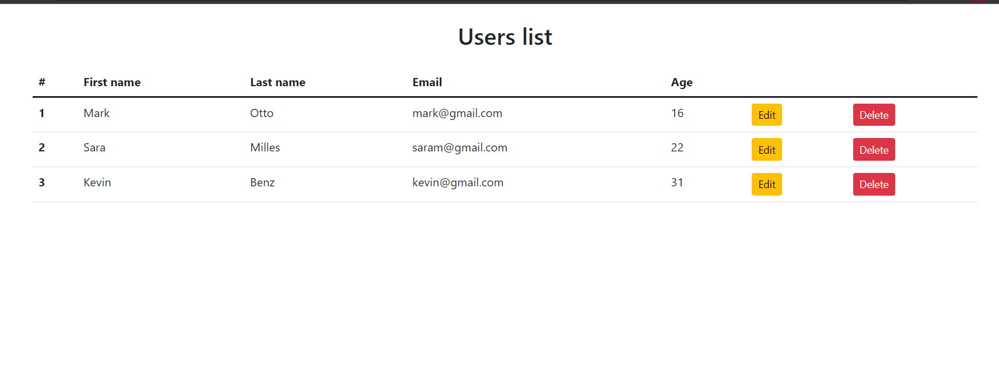
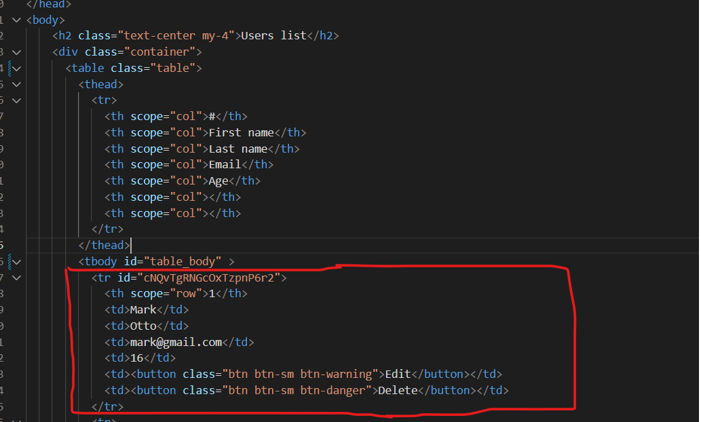
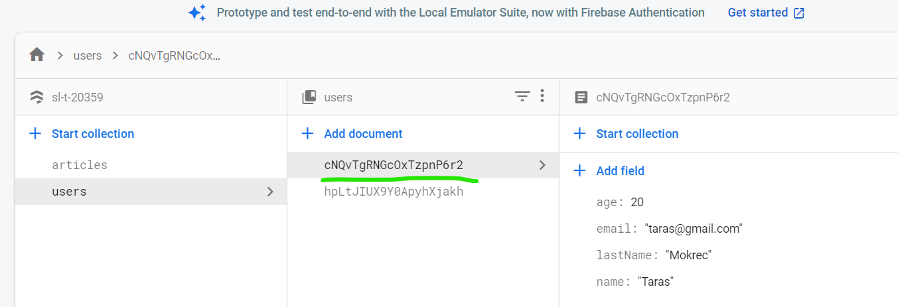
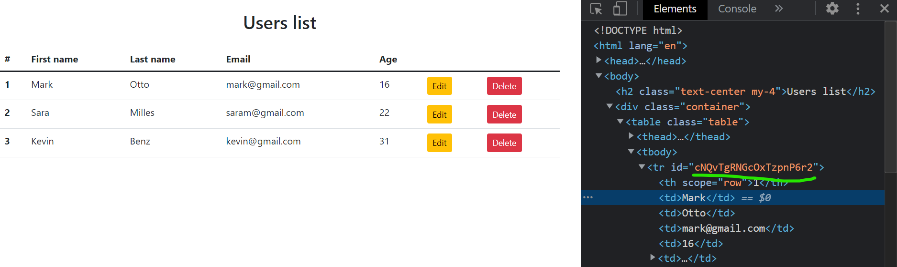

Редагування та видалення документів у firebase (№ 1)
1. Виведіть у таблиці список користувачів у колекції 'users' в firebase

2. Додайте макет таблиці викристовуючи bootstrap за цим
посиланням

3. Витягніть із бази данних усії користувачів. Створіть функцію drawUser(user) яка додаватиме користувача у таблицю на вашій сторінці. У тег tbody додайте id table_body. Функція повинна стоворювати рядки у таблиці для кожного документу та вставляти в середину тегу із id table_body

<script>
const users = [];
//Витягуємо всіх юзерів із колекції users
db.collection("users").get().then( function(res) {
//Пребираємо кожного отриманого юзера
res.forEach( function(doc, inex) {
const user = doc.data();
users.push(user);
//Додаємо юзера у фукцію щоб відобратизи його інформацію на html-сторінці
drawUser(user, inex);
});
console.log(users);
});
function drawUser(user, index){
//Створюємо рядок та стовпці для таблиці у якості html-елементів
const user_tr = document.createElement('tr');
const number_td = document.createElement('td');
const name_td = document.createElement('td');
const last_name_td = document.createElement('td');
//Заповнюємо html-елементи відповідними текстами
number_td.innerText = index;
name_td.innerText = user.name;
last_name_td.innerText = ....
....
//додаємо стовпці у рядок
user_tr.appendChild(number_td);
user_tr.appendChild(name_td);
//додаємо рядок у таблицю
document.getElementById("table_body").appendChild(user_tr);
}
</script>
3. Покажіть у таблиці всі поля користувача та додайте напроти кнопку редагувати і видалити
4. Присвойте кожному рядку таблиці атрибут id який буде рівний id користувача у firebase


5. Створіть функцію deleteDoc(id) яка прийматиме id документа та видалятиме його
<script>
// Видалення документу у firebase по id
db.collection("users").doc(id).delete();
// Можна відслідковувати заверешення операції видалення
db.collection("users").doc(id).delete().then( function(){
// дії після видалення
console.log("Document deleted!")
});
</script>
5. Привяжіть до кожної кнопки 'видалити' подію click при якій спрацьовуватиме функція deleteDoc(id). У пареметр id передавайте id рядка у якому знаходиться кнопка.
6. Після видалення видаляйте рядок із таблиці